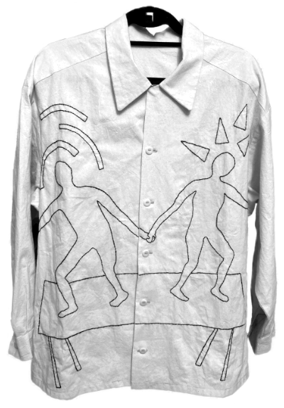
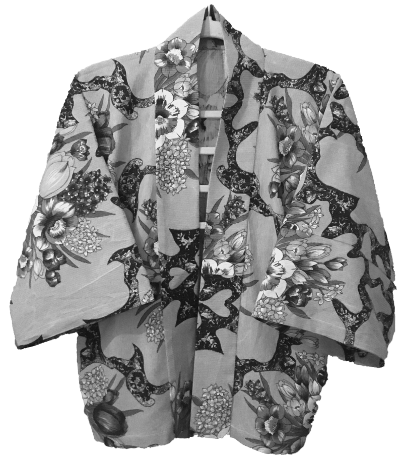
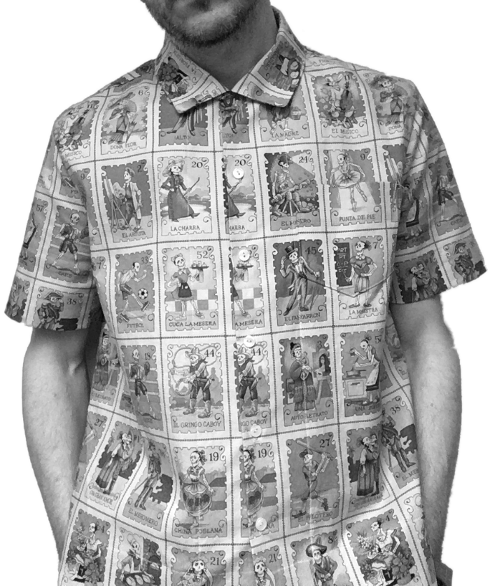

My grandmother was a seamstress.



It started with a coat and my mother's guidance. From there I made more clothes, took pattern cutting courses, and spent six years inside a small fashion label, learning the full craft and business of fashion from the inside out. I made all of the items in the photos.